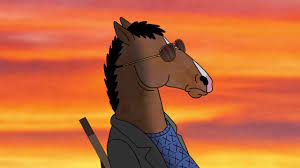
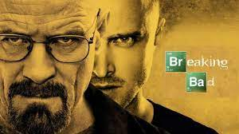
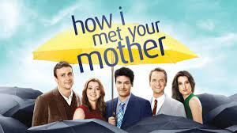

Mi Top series:

Conoce al caballo más querido de los 90… veinte años después. Vive en Los Ángeles donde humanos y animales antropomórficos coexisten, BoJack Horseman es la historia de un hombre (bueno, un caballo-hombre) que llegó muy rápido a la cima y ahora tiene que averiguar qué hacer.
comentario propio: Serie recomendada debido a su gran calidad de animación ademas de contar los problemas del mundo real de una forma muy acertada y realista, vale aclarar que no considero sea una serie para infantes debido a los temas tratados, pero si una buena animación para personas +15 años aproximadamente

Tras cumplir 50 años, Walter White (Bryan Cranston), un profesor de química de un instituto de Albuquerque, Nuevo México, se entera de que tiene un cáncer de pulmón incurable. Casado con Skyler (Anna Gunn) y con un hijo discapacitado (RJ Mitte), la brutal noticia lo impulsa a dar un drástico cambio a su vida: decide, con la ayuda de un antiguo alumno (Aaron Paul), fabricar anfetaminas y ponerlas a la venta. Lo que pretende es liberar a su familia de problemas económicos cuando se produzca el fatal desenlace.
comentario propio: Una serie que si bien podria considerarse pesada, es la que presenta mejores detalles y calidad desde el punto de vista cinematografico, tanto por la forma de llevar la historia como tambien por la caracterización de personajes y la forma en la que logra que empaticemos con ellos

En el año 2030, Ted (Josh Radnor) relata a sus dos hijos adolescentes cómo conoció a su madre y cómo fue su vida hasta que, por fin, encontró el amor verdadero. Todo empezó cuando Marshall (Jason Segel), su mejor amigo, decidió casarse con Lily (Alyson Hannigan), su novia de toda la vida. Entonces Ted decidió lanzarse a la búsqueda del amor verdadero y formar una familia. Para conseguirlo contó con el apoyo de su amigo Barney (Neil Patrick Harris), un joven algo extravagante y muy hábil para conocer mujeres. Cuando, por fin, Ted conoce a Robin (Cobie Smulders), una impresionante joven canadiense que acaba de mudarse a Nueva York, está completamente seguro de que es amor a primera vista, pero el destino aún puede depararle muchas sorpresas.
comentario propio: Sin ningun lugar a dudas, mi sitcom favorita y no hay capitulo en el que no te saque una sonrisa ademas de las lecciones de vida que deja en algunos capitulos con los cuales logra que el espectador se replantee muchas cosas